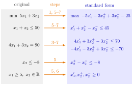

Standard Form of a Linear Program¶
Method¶
In matrix notation a linear program reads subject to , , with vector of variables , technology matrix (entries ), vector of objective coefficients and right-hand side . A linear program is in standard form if it reads
A lower bound on a single variable () is a domain definition; an upper bound on a single variable () counts as a constraint. Every linear program is brought into standard form by the following scheme, which uses , , and and with .
- Turn a minimization into a maximization: .
- Gather the variables on the left-hand side and the constants on the right-hand side (RHS).
- Replace each equality constraint by two constraints with the same left- and right-hand sides, one with and one with .
- Turn each -constraint into a -constraint: .
- Replace each variable without a lower bound (no domain definition, so ) by with .
- Replace each variable with domain definition , , by with .
- Repeat step 2 as a clean-up: move the constants created in step 6 to the right-hand side. A constant left in the objective does not change which solutions are optimal and may be dropped.
Interpretation¶
Standard form is an agreed format, so that every theorem and every algorithm about linear programs has to be stated only once. Whatever mix of minimization and maximization, , and , free and bounded variables a model has, the scheme rewrites it as a maximization of over , .

The figure runs the scheme on Example 1 below, one row at a time. Step 1 turns the minimization into a maximization, step 3 splits the equality and step 4 negates its half. The bound is a domain definition, so step 6 substitutes ; has no lower bound, so step 5 substitutes . These substitutions reach every row, and step 7 moves the constants they create: , , and in the objective. The upper bound is not a domain definition, so it stays a row of , and the domain definitions on the left end up as on the right.
Each step keeps the problem the same. Steps 3 and 4 rewrite constraints without changing the feasible region, and the substitutions of steps 5 and 6 give the old variable exactly its old range of values. What changes is the bookkeeping: step 1 flips the sign of the optimal value, and a constant dropped in step 7 shifts it. To report the optimal value of the original linear program, both must be undone (Example 1).
The split between domain definitions and constraints is a convention. Only lower bounds count as domain definitions, so an upper bound stays a row of , and a variable with only an upper bound is split in step 5 (Example 3). Structurally there is no difference: writing the lower bounds as gives one system with the block matrix of above and of above . Either way the feasible region is a polyhedral convex set, and a linear program is a convex optimization problem.
Steps 1 and 5 are the minimization-to-maximization and unrestricted variable transformations of OR Modelling. A common confusion is with the augmented form, the equation form with slack variables; the standard form here is the inequality form, and its right-hand side may have negative entries, unlike the simplex tableaux of OR Modelling, which needed . The dual linear program is formed from exactly this format.
Key Results¶
- Every linear program can be rewritten in standard form by steps 1–7 of the scheme; the substitutions and do not change the set of values the original variable can take.
- The feasible region is a polyhedral convex set.
- The optimal solutions of the original linear program correspond to those of the standard form; the optimal values differ by the sign change of step 1 and the constant dropped in step 7 (Example 1 below).
- Domain definitions and constraints differ only by convention: together with is one system , where stacks above .
- In standard form the domain definitions are linearly independent constraints, so .
Examples¶
1. A minimization with an equality constraint. Minimize subject to , , and . Step 1 gives ; step 3 splits the equality; step 4 turns into . The bound is a domain definition, so step 6 sets ; has no lower bound, so step 5 sets , and stays a constraint. After the clean-up,
The original linear program is easy to solve: the equality gives , so the objective is , and forces ; at also , so the minimum is . In standard form this is , , . Without the constant the standard-form value is ; with it, , and undoing step 1 returns the minimum .
2. Two-sided bounds. Minimize subject to , , and . The lower bounds are domain definitions, handled by and ; the upper bounds are constraints. The objective becomes , and the standard form is
As a check: the equality gives and , and the bounds leave , so the minimum is at . This is , , where the standard-form objective equals .
3. An upper bound without a lower bound. Minimize subject to , , , , , and . Step 2 moves to the left. The variable has no lower bound, so is a constraint and is split, like ; . The result is
The substitution with would also be correct and gives a smaller linear program, but it is not what the scheme does.
4. Reading off , , . A company makes products from resources : one unit of product uses units of resource , resource has capacity , and product earns revenue per unit. The production planning program subject to for and is already in standard form, with and . The technology matrix has one row per resource and one column per product, so its entry in row , column is : is the transpose of the table indexed by product and resource. Note also that the letter here denotes capacities, which go into , not into .
Prerequisites¶
- Linear Programming
- Polyhedral Convex Set
- Minimization-to-Maximization Transformation
- Unrestricted Variable Transformation
- Convex Optimization Problem
Related Concepts¶
- Augmented Form
- Negative Right-Hand Side Transformation
- Possible Outcomes of a Linear Program
- Dual Linear Program
- Primal–Dual Transformation Scheme
- Basis and Basis Matrix
Sources¶
- Math VI: Convexity and Optimization · Week 4
- H. E. Nusse and M. Dienstknecht, Math VI: Convexity and Optimization, lecture notes 2026–2027, Section 4.1
Aliases: standard form, LP in standard form, standard form LP, technology matrix, matrix notation of an LP Keywords: \max Z=\boldsymbol{c}^{\top}\boldsymbol{x}, \boldsymbol{A}\boldsymbol{x}\leq\boldsymbol{b}, \boldsymbol{x}\geq\boldsymbol{0}, x_j=x_j^{+}-x_j^{-}, domain definition versus constraint, transformation scheme, right-hand side Symbols: element of, real numbers, sum
Last updated: 5 November 2026 12:47
Standard Form of a Linear ProgramBasis and Basis MatrixBig-M MethodDual Linear ProgramDual of the DualPossible Outcomes of a Linear ProgramPrimal–Dual Transformation SchemeLinear ProgrammingPolyhedral Convex SetMinimization-to-Maximization TransformationUnrestricted Variable TransformationConvex Optimization ProblemAugmented FormNegative Right-Hand Side Transformation